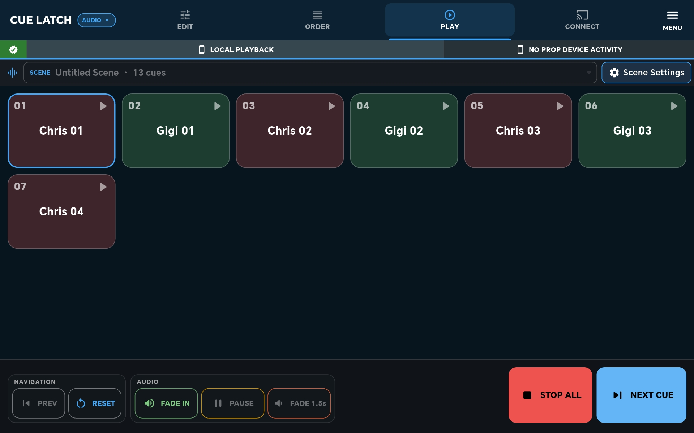
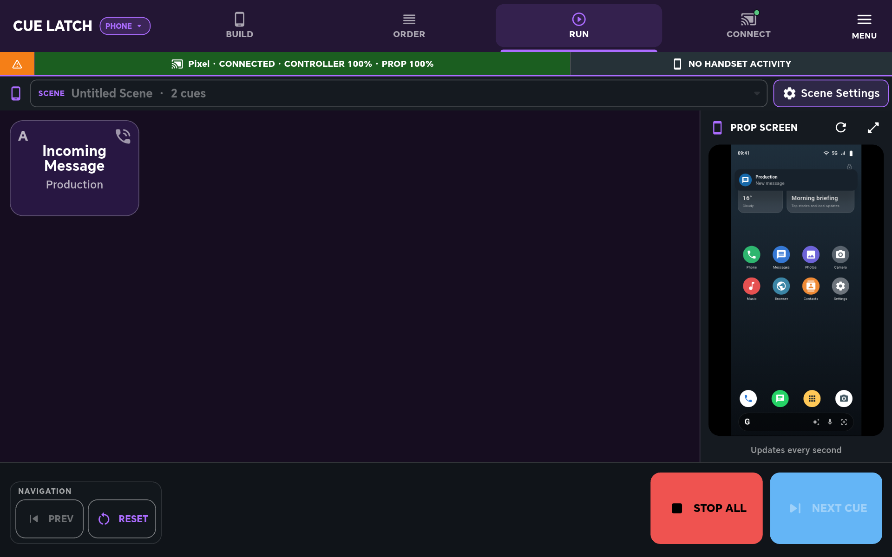
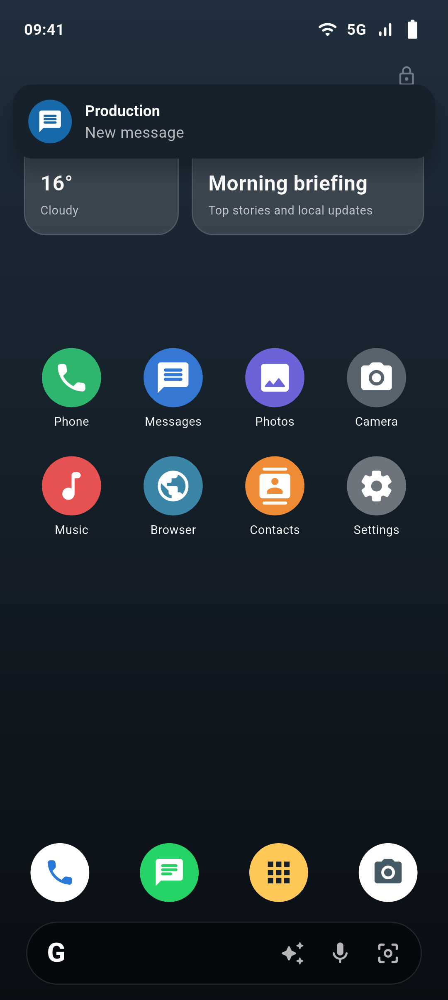
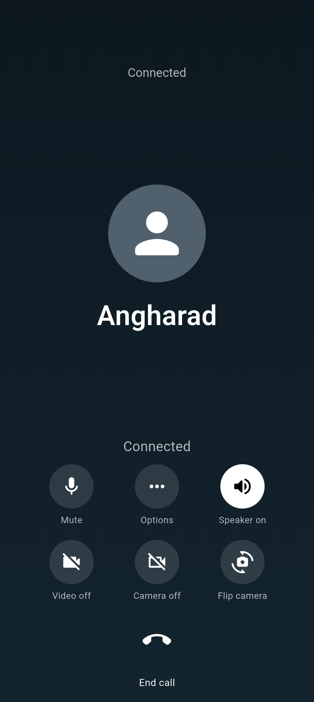

Two practical workflows
Play the cue.
Control the prop.
CueLatch does two things: it plays ordered audio cues, and it controls believable screens on an Android prop handset.
01 / AUDIO
Audio cue playback.
Cut cues from a recording, put them in scene order and trigger them when needed. Playback can stay on the controller or be sent through the connected prop handset’s earpiece.


HANDSET
02 / PROPS
Prop screen control.
Connect an Android handset on the production network and control what appears on it. The operator stays off camera while the actor handles a convincing phone screen.




In use on set
A small tool beside the sound cart.
CueLatch running alongside a professional Sound Devices Scorpio-based cart. It is designed as a focused cue and prop-phone tool—not a replacement for the rest of the production sound workflow.
Private testing
Help test CueLatch.
CueLatch is being refined with a small group of production professionals before wider release.